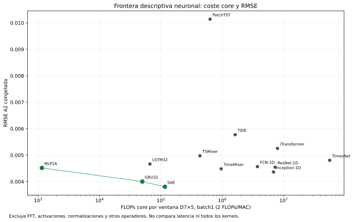

58. Coste de operaciones de los predictores congelados#
Se auditaron los 13 cuerpos neuronales realmente seleccionados (10 principales y las tres referencias de E1), con ventanas D7×5, batch 1, float32 y eval. Se usaron las recetas ganadoras de los recibos de reproducción y se verificó que los constructores coincidieran byte a byte con el commit científico 1e8745497b484518f766b6da5c19be8362d9add7. Los validadores originales comprobaron los archivos de autor requeridos.
El resultado es FLOPs core por ventana, con la convención común 1 MAC = 2 FLOPs: productos de matrices, convoluciones, matrices de las compuertas recurrentes y QK/AV de atención. Es un conteo algorítmico denso; conserva todos los términos del kernel incluso en el padding. Las sumas de sesgo, activaciones, normalizaciones, reducciones/pooling, FFT, selección de periodos y movimientos de memoria quedan fuera de la suma. El JSON publica el inventario completo de operadores observados y sus formas para que esas exclusiones sean comprobables. No se presenta la suma como FLOPs totales de todos los kernels.
No se cargaron checkpoints ni datos de mercado, ni se crearon optimizadores. La CPU se utilizó exclusivamente para contar operaciones sobre tres entradas sintéticas (ceros, rampa y seno), no para medir latencia, energía o aceleración frente a la A100. Los tres conteos coincidieron en cada cuerpo. En TimesNet la longitud FFT 8 permite periodos no DC 8,4,2,2. El conteo publicado corresponde a las rutas observadas con pesos de inicialización y tres sondas sintéticas, sin cargar los pesos entrenados. Esas tres sondas no acotan completamente las rutas dependientes de valores ni el coste de FFT. La suma es una medida parcial bajo la convención densa, no un total FLOP de todas las rutas o kernels. La FFT queda explícitamente excluida. MKLDNN se desactivó para exponer a ATen los productos recurrentes, sin modificar las capas.
Modelo |
Parámetros registrados |
FLOPs core / ventana |
|---|---|---|
FCN-1D |
268,929 |
3,741,952 |
ResNet-1D |
522,955 |
7,265,920 |
Inception-1D |
490,561 |
6,837,632 |
LSTM-autoencoder con predictor |
8,739 |
116,308 |
TimesNet |
1,173,099 |
56,242,762 |
TSMixer |
35,044 |
433,110 |
TiDE |
163,384 |
1,622,816 |
TimeMixer |
9,447 |
960,650 |
PatchTST |
16,388 |
632,330 |
iTransformer |
795,403 |
7,936,020 |
MLP16 |
593 |
1,152 |
LSTM32 |
5,025 |
66,368 |
GRU32 |
3,777 |
49,792 |
La frontera de Pareto descriptiva usa RMSE de A2 congelada y FLOPs core, minimizando ambos. Bajo esta convención y solo entre sistemas neuronales, pertenecen a la frontera: LSTM-autoencoder con predictor, MLP16, GRU32. Esta frontera no prueba dominancia estadística, ni incorpora latencia, memoria, calibración o el coste excluido de FFT/activaciones. No se volvió a seleccionar ningún predictor a partir de ella.
Persistence y SeasonalNaive son consultas históricas; ARIMA tiene estados y actualizaciones causales que no se midieron con el contador ATen neuronal. Se registran como no medidos bajo esta convención, sin asignarles artificialmente cero FLOPs. El artefacto contiene el coste de inferencia core, no el de HPO ni las operaciones de entrenamiento.
Archivos: flops_by_model.csv, flops_audit.json, frozen_architecture_inputs.json, pareto_core_flops_rmse.csv y pareto_core_flops_rmse.svg. El conteo no convierte las exclusiones declaradas en costes medidos.
Artefactos y reproducción#

El código reproducible es scripts/e2_flops_final_audit.py. Cinco pruebas comprueban fórmulas independientes de lineales, convolución agrupada, LSTM, GRU y exclusiones. Esta medición posterior se distingue de los perfiles A100 de §54 y de los costes históricos de §51.